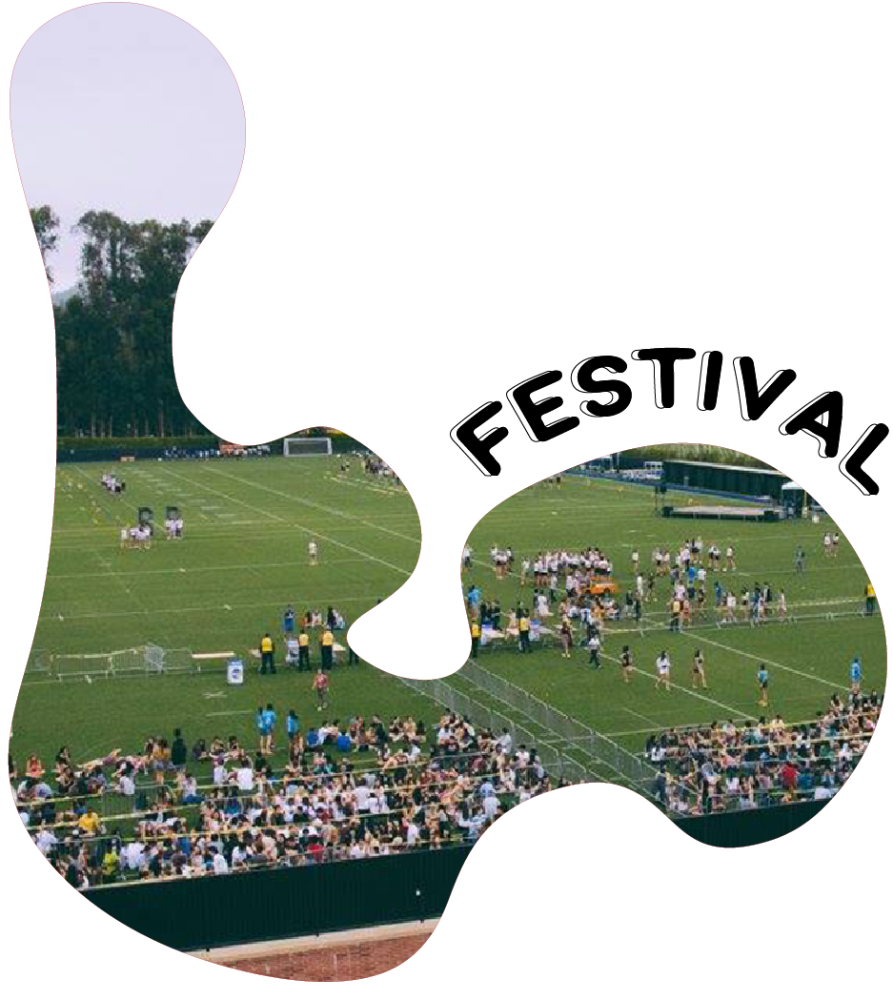
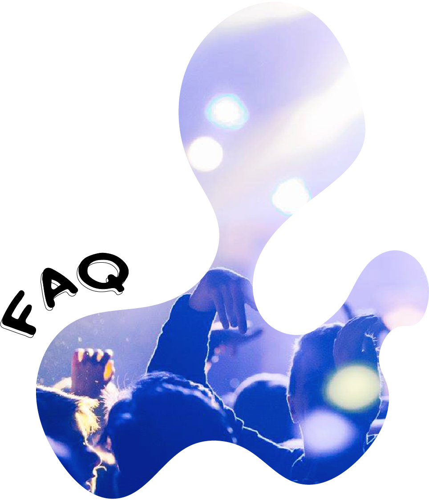

Can’t catch the concert? Come by Sunset Recreation for an awesome night of music, food, and Wonder Woman! We’ll be starting the night with some great tunes and tons of free food—popcorn, candy, and other special treats from our sponsors. Then, for the main event, we’ll be showing Wonder Woman out on the Sunset Rec lawn! So, grab your friends and stretch out on the grass while watching one of the summer’s biggest blockbusters!
Wristbands for Wonder Woman will be distributed on the IM field on September 25th from 12:00pm to 4:00pm. Please claim your Wonder Woman wristband at the appropriate wristband tent.
Doors to Sunset Recreation will open at 5:00pm, and the movie starts promptly at 7:29pm. But don't miss out on watching the sunset at 6:49!

Hello Bruins!
UCLA Campus Events Commission and Cultural Affairs Commission are pleased to announce that UCLA's annual Welcome Back Bruin Bash Concert is returning for its 15th year in a row. On Monday, September 25th, all UCLA undergraduate Bruins will have the opportunity to experience a pre-concert festival full of giveaways and other swag, an outdoor film screening, and of course the classic Bruin Bash concert in our very own Pauley Pavilion.
Due to the size of the concert venue, we unfortunately cannot guarantee that all current undergraduate students will receive a wristband for the concert. This year, tickets for the concert will be requested online in the following ways:
Floor (Ground Level – Standing Only) tickets - Will be available September 13th, 2017 at 10:00am. Floor tickets will be available on this date and time and run on a first come first served basis until no floor tickets remain. Once all floor tickets have been claimed, you will be prompted to explore the opportunity to enter the ticket lottery for 100/200 level (seated) tickets (please see below). If you are granted a floor level ticket, you will not have the opportunity to change into 100/200 level seating.
100/200 level (Seated) tickets - Students have the option of entering an online lottery to receive a ticket for 100/200 level concert seating. Note that not all students who enter the lottery will receive a ticket due to venue capacity restraints. Students will be notified September 23rd of the result of the lottery.
More details can be found under Tickets & FAQ.
If interested in signing up for the opportunity to receive a Bruin Bash concert ticket, please be mindful of the Monday, September 18th 4:00pm deadline.
Before the lottery opens, we highly suggest that you attempt to login to your CTO Student account here. You will need to use your UID (not your email address) as your Account ID. If this is the first time you are accessing this site and/or forgot your password, please click on the “Forgot your password” link to reset your credentials. If you have any questions regarding your account please email cto@tickets.ucla.edu
If you have any questions whatsoever, please do not hesitate to reach us at bruinbash.ucla@gmail.com
Best of luck,
Nedda Nikki Saidian | UCLA Campus Events Commission @uclacec
Malik D. Flournoy-Hooker | UCLA Cultural Affairs Commision @culturalaffairs
UCLA Campus Events Commission and Cultural Affairs Commission are pleased to announce that UCLA's annual Welcome Back Bruin Bash Concert is returning for its 15th year in a row. On Monday, September 25th, all UCLA undergraduate Bruins will have the opportunity to experience a pre-concert festival full of giveaways and other swag, an outdoor film screening, and of course the classic Bruin Bash concert in our very own Pauley Pavilion.
Due to the size of the concert venue, we unfortunately cannot guarantee that all current undergraduate students will receive a wristband for the concert. This year, tickets for the concert will be requested online in the following ways:
Floor (Ground Level – Standing Only) tickets - Will be available September 13th, 2017 at 10:00am. Floor tickets will be available on this date and time and run on a first come first served basis until no floor tickets remain. Once all floor tickets have been claimed, you will be prompted to explore the opportunity to enter the ticket lottery for 100/200 level (seated) tickets (please see below). If you are granted a floor level ticket, you will not have the opportunity to change into 100/200 level seating.
100/200 level (Seated) tickets - Students have the option of entering an online lottery to receive a ticket for 100/200 level concert seating. Note that not all students who enter the lottery will receive a ticket due to venue capacity restraints. Students will be notified September 23rd of the result of the lottery.
More details can be found under Tickets & FAQ.
If interested in signing up for the opportunity to receive a Bruin Bash concert ticket, please be mindful of the Monday, September 18th 4:00pm deadline.
Before the lottery opens, we highly suggest that you attempt to login to your CTO Student account here. You will need to use your UID (not your email address) as your Account ID. If this is the first time you are accessing this site and/or forgot your password, please click on the “Forgot your password” link to reset your credentials. If you have any questions regarding your account please email cto@tickets.ucla.edu
If you have any questions whatsoever, please do not hesitate to reach us at bruinbash.ucla@gmail.com
Best of luck,
Nedda Nikki Saidian | UCLA Campus Events Commission @uclacec
Malik D. Flournoy-Hooker | UCLA Cultural Affairs Commision @culturalaffairs
Check CTO Account
Request a Ticket
Ticket Info



From 12pm - 5pm on the Intramural Field, enjoy free activities, giveaways, and more from our sponsors!
Wristband distribution for 100/200 level seating for the concert will also beheld from 12pm - 4pm on the IM Field.
Please note, no food or drinks will be allowed on the field! Any consumable items will be discarded immediately
Wristband distribution for 100/200 level seating for the concert will also beheld from 12pm - 4pm on the IM Field.
Please note, no food or drinks will be allowed on the field! Any consumable items will be discarded immediately

Lottery System
- Tickets will be distributed via an online lottery system this year.
- Floor (Ground Level - Standing) tickets - Will be available September 13th, 2017 at 10am. Floor tickets will be available on this date and time and run on a first come first served basis until no floor tickets remain. Once all floor tickets have been claimed, you will be prompted to explore the opportunity to enter the ticket lottery for 100/200 level (seated) tickets (please see below).
- 100/200 level (Seated) tickets - Students have the option of entering an online lottery to receive a ticket for 100/200 level concert seating. Note that not all student who enter the lottery will receive a ticket due to venue capacity restraints. Students will be notified September 23rd of the result of the lottery.
- As usual, Bruin Bash is ONLY available for current undergraduate students enrolled at UCLA.
- Students may enter the lottery by entering their UCLA student ID number, found on their Bruin Card. The link to enter this lottery will be found on the official Bruin Bash website at bruinbash.ucla.edu. Students have until September 18th, 2017 at 4pm to enter the lottery; students may not enter the lottery past this submission deadline.
- Winners of the lottery will be notified via email 2 days before Bruin Bash, on September 23rd.
- Winners will receive a wristband to Bruin Bash 2017.
Claiming a Wristband
- All tickets for the floor and 100/200 level seating can be exchanged for wristbands on the day of Bruin Bash, on September 25th 2017.
- All tickets may be redeemed for wristbands to the corresponding section of Pauley Pavilion.
- Wristband distribution for winners will begin at 12pm and end at 4pm.
- Wristbands must be claimed with YOUR OWN Bruin Card. You cannot claim a wristband using somebody else's Bruin Card.
- Wristband distribution for FLOOR seating will be given at the Central Ticketing Office (CTO) from 10am – 4pm.
- Wristband distribution for all OTHER sections (100/200 level) will be given on the IM field from 12pm – 4pm.
- At 4 pm, all unclaimed wristbands will be released to any undergraduate students that were unable to successfully receive a wristband through the lottery. These wristbands will be distributed on a FIRST COME FIRST SERVED basis at the Central Ticketing Office (CTO), while supplies last, from 4 pm to 5 pm. Please note: you must have entered the lottery and had not been granted a ticket to claim a wristband during the time frame above. We suggest to all undergraduates to enter the lottery for this reason.
- All students that won the lottery are guaranteed a wristband to Bruin Bash as long as they arrive to pick up their wristband BEFORE 4pm. After 4pm, all unclaimed lottery tickets are considered invalid and the student must wait in line to try for an unclaimed wristband.
What do I do after I get my wristband?
- There will be free giveaways and activities on the IM field, so feel free to walk around and browse the booths!
- At 5pm, the line to enter Pauley Pavilion for the concert will begin on the south side of the IM field. Lines on the IM field will be partitioned based on what section of Pauley your wristband is for (Floor, 100, and 200)
- At 6 pm, doors open and students in the line on the IM field will be admitted first into the venue. Upon entering the venue, you will be directed to the correct section of Pauley.
- Wristbands are valid up until 8:30pm, after 8:30pm there will be no admission into the concert.
- NOTE: Students that would like to sit with their friends must enter the venue with their friends.
Other Important Information
- No outside food or drinks will be allowed onto the IM field. Bags, however, are OKAY for the IM field during the festival. Bags are not allowed on the IM field after 4pm.
- Absolutely NO in’s and out’s of the event venue. Once you leave you may not re-enter the venue.
- No bags of ANY size are allowed into Pauley Pavilion. We are sorry but there is zero tolerance for this rule. If you bring a bag, there is storage in the Wooden Center if you rent a locker. No food or drinks (including water!) are allowed into Pauley Pavilion as well, and will be disposed of prior to entry into the venue.
- We have zero tolerance for the use of illegal substances at Bruin Bash. Alcohol and drugs are in direct violation of our True Bruin Values and will not be tolerated. Any use of these substances at our events will result in immediate expulsion from the venue, with no re-entry.
- No smoking including e-cigarettes, vapes, etc. UCLA is a smoke free campus.
- Keep your Bruin Card on you at all times; they will be required for entry into all areas of the event. Every person must have a student identification at all times during the event.
- Students with disabilities: please contact the Center for Accessible Education at (310) 825-1501 or visit A255 Murphy Hall during the office hours of 8AM to 5PM Monday through Friday for more information on receiving of wristbands.
- If students have a medical history of seizures or epilepsy, it is advised that they take precautionary measures against potentially triggering concert lighting during the show
FAQ - Tickets
Who can get a ticket to Bruin Bash?Bruin Bash is exclusively for current undergraduate UCLA students.
How do I sign up for a concert ticket?
Check the "Getting Tickets" tab for more info!
How do I know if I received a ticket from the lottery?
An email should have been sent out to the email linked to your CTO account. If it’s not in your inbox, then please check your spam inbox as well. If you don’t receive an email by the end of September 23rd, 2017, please email cto@tickets.ucla.edu for assistance.
I didn’t receive a concert ticket. What do I do now?
Due to the size of the venue, we cannot guarantee concert tickets for all students. However, there are plenty of other great features of Bruin Bash to explore! Try checking out the booths at the Bruin Bash festival on the IM Field, or the film at Sunset Recreation.
Where do I pick up my wristband for the concert?
Detailed instructions can be found on the Ticket section of the concert page on this website, found here.
Are wristbands transferrable?
No, wristbands are bound to your BruinCard, and are immediately put on your wrist when you scan your BruinCard at wristband distribution locations. Your BruinCard will be face-checked, so your wristband can be picked up by you and only you. Attempts to sell your wristbands will result in the removal of the ticket from your BruinCard. No exceptions.
FAQ - Concert
What time can I start lining up to get in Pauley Pavilion?Lineup begins at at 5pm on the IM field. Doors to the concert open at 6pm. The concert will start promptly at 7:30pm. Wristbands are valid up until 8:30pm, after 8:30pm there will be no admission into the concert.
Can I bring a bag/purse?
No, absolutely no bags, backpacks, or purses are allowed into the venue. If you bring a bag, you may rent a locker from the John Wooden Center but you will not be able to bring it inside Pauley Pavilion.
Can I bring a selfie stick?
No you may not.
Will there be food?
The concession stand inside Pauley Pavilion will be open if you would like to purchase food and drinks once you have entered the venue.
Do I need to bring my BruinCard?
Please have your BruinCard on you at all times.
When is the latest I can enter Pauley Pavilion?
Doors officially close at 8:30pm. After 8:30pm, all wristbands are invalid. Anybody who is not in line to enter Pauley Pavilion at 8:30pm sharp can no longer enter the venue.
I need special accommodations for the concert. Who do I contact?
Students with disabilities: please contact the Center for Accessible Education at (310) 825-1501 or visit A255 Murphy Hall during the office hours of 8AM to 5PM Monday through Friday for more information on accommodations.
FAQ - Outdoor Film
How do I get a ticket?Just show up with your BruinCard to the IM field from 12pm to 4pm. Tickets are given on a first-come-first-served basis.
Can I bring a friend to the movie?
The film is exclusively for current undergraduate UCLA students.
Do I need to bring money for the movie?
The screening is completely free, as always.
Where do I line up?
You can line up at the upper load area of Sunset Rec across from the Easton Stadium.
When does lineup start?
Lineup starts at 4:30pm
FAQ - Festival
What hours will the festival be open?The festival’s activities will run from 12pm to 5pm. The IM field will remain open from 5pm to 8:30pm to form lines for the Bruin Bash concert.
How do I get in?
The east entrance of the IM field will be open starting 12pm. At 5pm, the southwest entrance will also open.
Do I need my BruinCard?
Please keep your BruinCard on you at ALL times.
Can I bring a bag?
Yes, you may bring a bag onto the IM Field for the Festival. However, please be aware that no bags will be allowed into the concert venue, Pauley Pavilion.
Can I bring in food or drinks?
Only water is allowed on the field. Any other consumable items are prohibited and will be discarded immediately.
About CEC
Since 1965 Campus Events Commission (CEC) has been one of the largest purveyors of campus entertainment. Since its inception, CEC has had a reputation for its edgy advertising and controversial events. Still pushing the envelope today, CEC remains a student-run, student-funded organization, dedicated to introducing the finest fare in film, music and speakers to the UCLA community. Be it media seen or heard, Campus Events Commission is constantly in search of that which is as evocative and diverse as its audience.@uclacec
About CAC
The mission of the Cultural Affairs Commission (CAC) is to put on quality programming with cultural, political and/or social relevance that is accessible to all students. The commission is focused on "Edutainment" (education + entertainment), arts activism, and student-run programs that ignite DIALOGUE regarding current events, facilitate an exhibition of creativity , and promote cultural opportunities on campus.@culturalaffairs